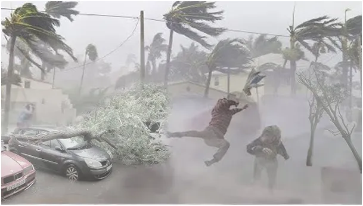
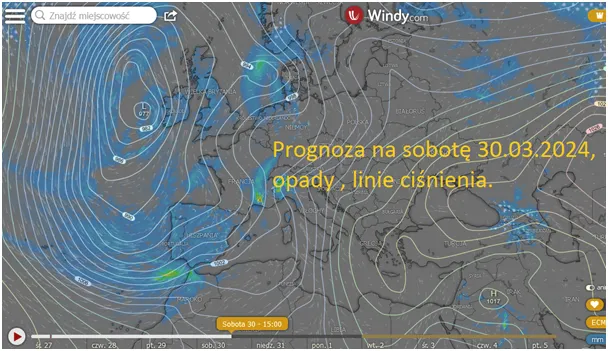
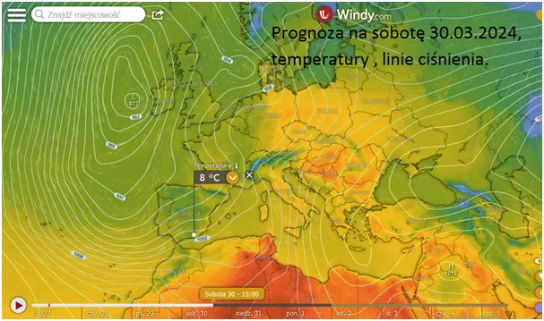
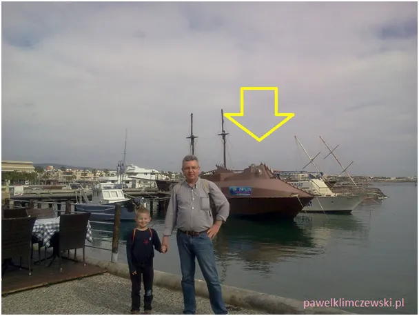
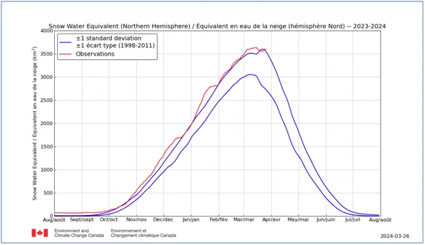

Zanim polecisz na Baleary obejrzyj izobary.
Od tygodnia Słońce ogrzewa bardziej półkulę północną niż południową, https://pawelklimczewski.pl/2024/03/22/na-polnocy-gdzie-nie-spojrzysz-jest-poludnie/ prądy morskie dodatkowo dostarczają na północ dużo ciepła i mamy marcowe mieszanie powietrza między Arktyką a okolicami Zwrotnika Raka.

Skutkuje to dynamiczną pogodą szczególnie na Atlantyku. Jej skutki czujemy często w postaci załamań pogody, ale zanim te sztormy dotrą do nas atakują najpierw zachodnią Europę, w tym zachodnie Morze Śródziemne i popularną turystycznie Majorkę oraz sąsiednie wyspy archipelagu Balearów, oczywiście południowe wybrzeże Hiszpanii też.

Nowy zwyczaj spędzania świąt gdzieś "na słoneczku" to całkiem dobry sposób na ładowanie naszych fizycznych i duchowych akumulatorów. Korzystam czasem z wiosennych anomalii pogody i np. w lutym spotykam się potajemnie i spiskujemy z kapitanem Nemo, w porcie na tureckim Cyprze, w państwie, o którym w polskim Ministerstwie Spraw Zagranicznych nikt nie słyszał!

Niestety w tym roku Hiszpania i okolice święta przywitają sztormową pogodą, to skutek gęstych izobar, linii ciśnienia, które na mapie łączą punkty o tym samym ciśnieniu. Jeśli te linie są gęste oznacza to duże różnice ciśnień na małej odległości. To podobnie jak w eksplozji, prowadzi do szybkiego przemieszczania się powietrza, czyli wichur i sztormów. Niskiemu ciśnieniu zwykle towarzyszą opady, a przy północnej cyrkulacji chłód. Czyli wieje, chłodzi i zacina tak, że słoneczny kapelusz nie pomoże.

P.s. Rekord ilości śniegu na północnej półkuli pobity i mimo końca marca przybywa. Mañana amigo!
Paweł Klimczewski